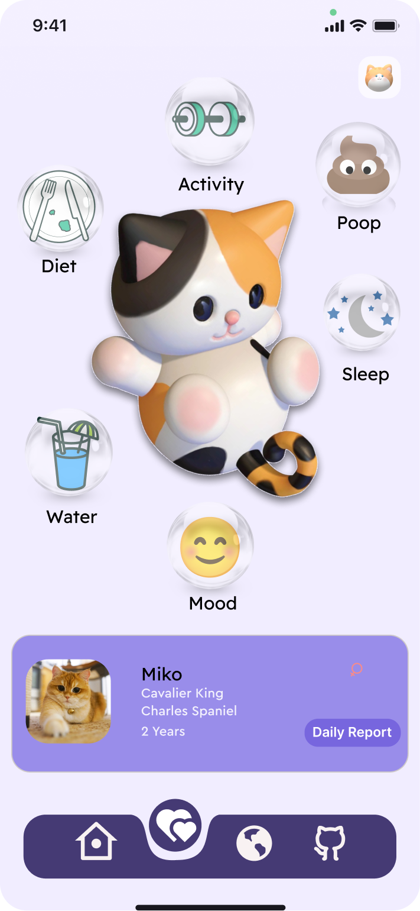
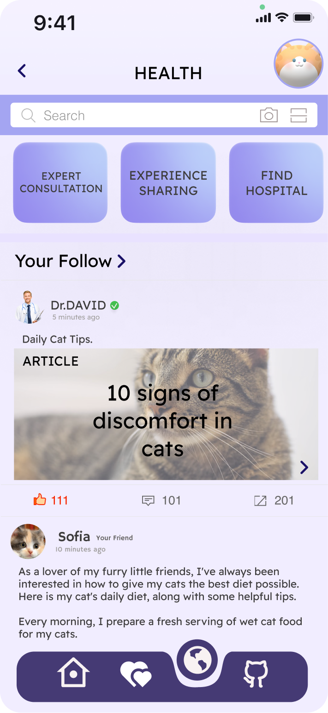
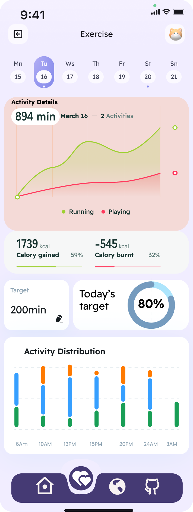

APP DESIGN · INFO10003
猫咪身心健康智能家居系统 — 可穿戴 × 智能家居 × 社区
以猫咪为核心主体的智能家居交互系统。研究发现市场上现有产品缺乏对猫咪心理状态的关注和功能整合，因此团队提出了一套涵盖健康监测、家居控制和社区交流的综合性解决方案。104 份问卷调查 + 情境调查 + 竞品分析驱动设计决策。



团队成员从猫主人的视角进行发散思维，深入分析用户需求。通过问卷调查收集了 104 位猫主人的数据：83.65% 为 18-29 岁城市年轻群体，65.05% 高度关注猫咪身心健康，主要需求为健康监测（27.62%）和行为分析（23.43%）。
分别观察智能设备用户和手动护理用户两类家庭的日常行为，精准定位核心需求。系统对比 Tractive GPS 和 Petkit 的优劣，发现市场空白：缺乏关注猫咪心理健康的集成化系统。
从线框图到中保真再到高保真原型逐步迭代。创建了故事板 (Storyboard)、用户画像 (Persona)、场景 (Scenario) 和使用案例 (Use Cases)，并讨论了可穿戴传感器适配性和噪音控制等技术限制。
通过猫咪佩戴的传感器实时追踪日常活动量、位置和健康数据，自动生成可视化图表，提供身心健康评估和个性化护理建议。
可穿戴设备与室内智能家电联动：感应猫咪靠近窗户时自动关窗，根据频繁活动区域提醒主人清洁，释放玩具缓解猫咪独自在家的无聊感。
认证猫咪和主人可在社区中展示，猫咪可以与附近猫咪社交。主人可以分享养宠经验、互助交流，构建猫主人社群。
Figma 高保真原型 · 30+ 界面 · 点击体验完整用户流程